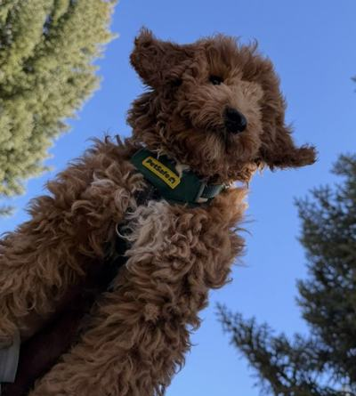
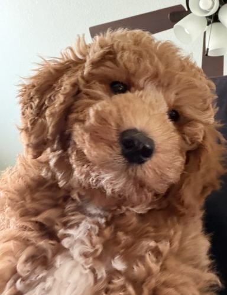
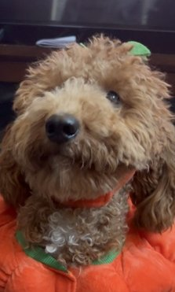

About the case



Meet Pi
Pi is a real goldendoodle, and he's the dog you've been chasing around the globe. In real life he doesn't get much farther than the backyard, but he is very good at disappearing with a sock.
Who made this
Hi, I'm Bikram, a software developer in Dallas–Fort Worth and Pi's human. I made Where's Pi as a little game built around him: every round, Pi has wandered off to some corner of the world, and it's your job to bring him home.
Thanks for playing and helping find him.
Bikram & Pi
Ideas, bugs or Pi fan mail: support@wherespi.com
Go find Pi